In last week’s post, I provided an overview of the context for my PhD research in Biomedical Informatics and Computational Genomics that I completed under the mentorship of Dr. Dokyoon Kim at the University of Pennsylvania Perelman School of Medicine. Today’s post will focus on some of the actual content that came out of my research. You can listen to a full presentation of my thesis defense here, and you can read the full text of my dissertation here. Note that all figures featured in this blog post were created using BioRender.com.
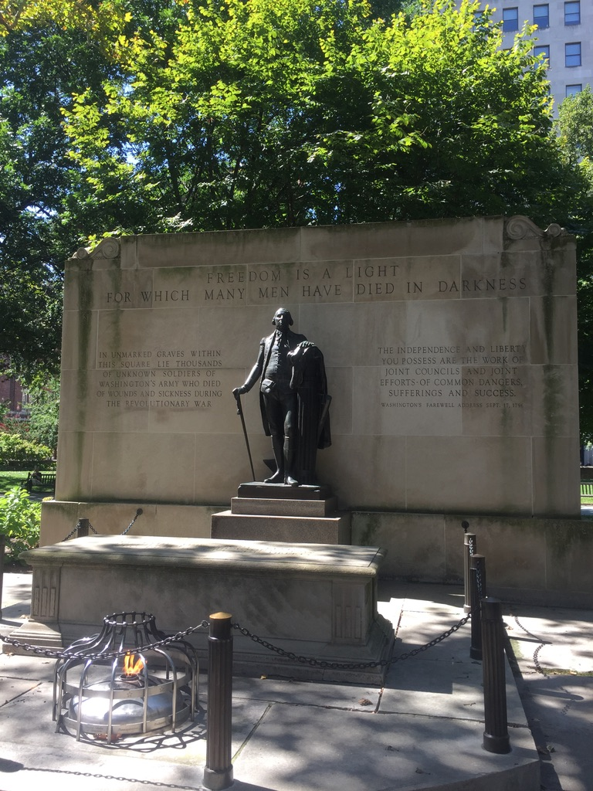
As discussed last week, the objective of my dissertation was to apply a network medicine approach to investigate genetic contributors to disease multimorbidities.
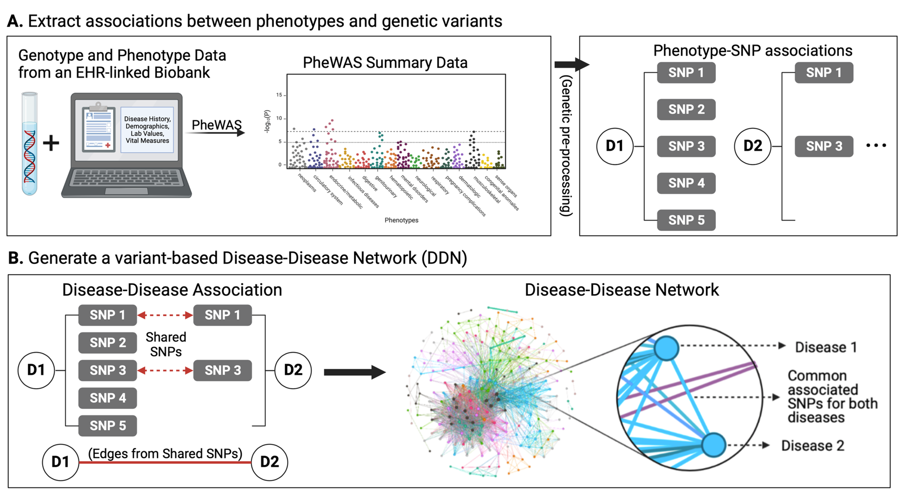
I broke this objective down into three chapters:
- Creation: construct and analyze a network of diseases derived from an EHR-linked biobank for the evaluation of genetic similarity between phenotypes
- Comparison. generate and compare different disease networks generated from different populations and from genetic components.
- Translation. extend the conclusions drawn from disease network analysis and comparison to downstream precision medicine applications.
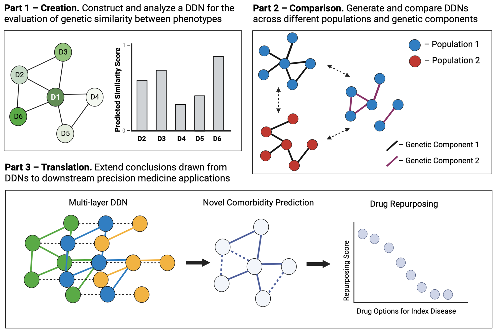
In today’s post, I will provide an example manuscript from each of these chapters to provide more insight into some of the work that I did.
Chapter 1. Creation
Example manuscript - NETMAGE: A human disease phenotype map generator for the network-based visualization of phenome-wide association study results
Disease-disease networks (DDNs), graphs where nodes represent diseases and edges represent associations between diseases, can provide an intuitive way of understanding the relationships between diseases.
Using summary statistics from a phenome-wide association study (PheWAS), we can generate a corresponding DDN where edges represent shared genetic variants (e.g. SNPs) between diseases.
Such a network can help us analyze genetic associations across the “diseasome,” the landscape of all human diseases, and identify potential genetic influences for disease multimorbidities.
To improve the ease of network-based analysis of shared genetic components across diseases, we developed the humaN disEase phenoType MAp GEnerator (NETMAGE), a web-based tool that produces interactive DDN visualizations from PheWAS summary statistics. You can try out the tool we developed at the following link: https://hdpm.biomedinfolab.com/netmage/
- Users can search their generated maps by various attributes and select nodes to view related diseases, associated variants, and various network statistics.
As a test case, we used NETMAGE to construct an example network from UK BioBank (UKBB) PheWAS summary statistic data. You can explore this network at the following link: https://hdpm.biomedinfolab.com/ddn/ukbb
- Our map correctly displayed previously identified disease comorbidities from the UKBB and identified concentrations of hub diseases in the endocrine/metabolic and circulatory disease categories.
By examining the associations between diseases in our map, we can identify potential genetic explanations for the relationships between diseases and better understand the underlying architecture of the human diseasome.
You can read the published manuscript for this project here.
Chapter 2. Comparison
Example manuscript - The interplay of sex and genotype in disease associations: a comprehensive network analysis in the UK Biobank
Given that many individual diseases exhibit sex-specific differences in their genetic influences (also known as “genotype-by-sex” or “GxS” effects), we aimed to determine whether disease multimorbidities are also influenced by GxS interactions.
Through the comparison of sex-stratified DDNs, we investigated differences across the sexes in patterns of shared genetic architecture between diseases.
Using sex-stratified phenome-wide association study summary data from the UK Biobank, we built male- and female-specific DDNs for 103 different diseases.
We compared our networks using the network comparison methods highlighted in figure 3:
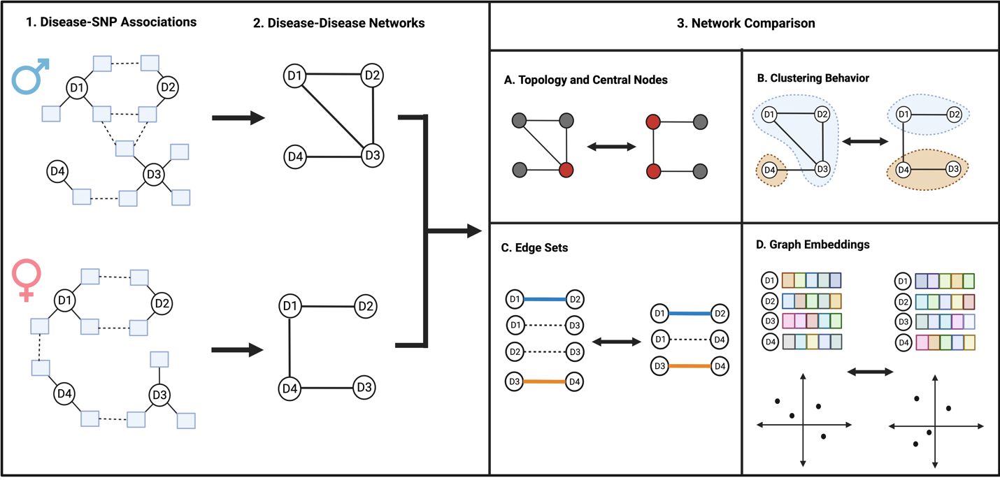
- Comparing the two graphs reveals that the diseasomes of males and females are similar to one another in terms of network topology.
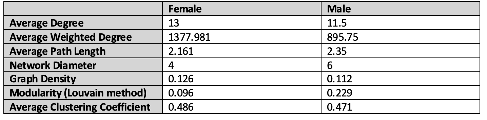
- Some diseases, however, seem to exhibit sex-specific influence in cross-phenotype associations. For instance, autoimmune and inflammatory disorders including multiple sclerosis and osteoarthritis are centrally involved only in the female-specific DDN, while cardiometabolic diseases and skin cancer are more prominent only in the male-specific DDN.
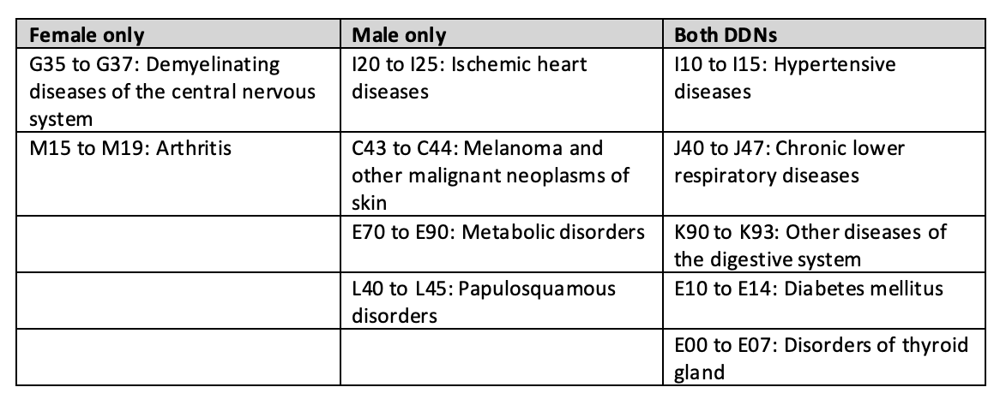
- Notably, discrepancies in embedding distances and clustering patterns across the networks imply a more expansive genetic influence on multimorbidity risk for females than males.
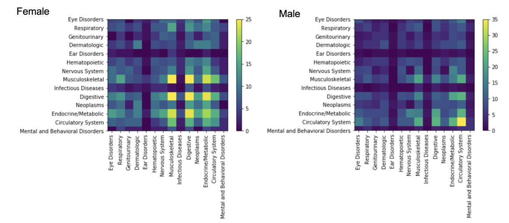
In summary, our analysis affirms the presence of GxS interactions in cross-phenotype associations, emphasizing the continued need for investigation of the role of sex in disease onset and its importance in biomedical discovery and precision medicine research.
This manuscript is currently under review for publication.
Chapter 3. Translation
Example chapter - An enhanced disease network with robust cross-phenotype relationships via variant frequency-inverse phenotype frequency.
- DDNs constructed from PheWAS data offer a unique ability to observe and evaluate associations between diseases from large-scale biomedical data.
- These publications all follow a similar approach when constructing a DDN:
- (a) a single statistical significance level (p-value) is selected to determine associations between diseases and SNPs.
- (b) the links between diseases and SNPs are compressed into links between diseases to generate the DDN
- (c) a similarity metric such as cosine similarity is used to determine how similar two diseases are based on the number of shared associated SNPs
- This process for constructing DDN seems straightforward, but it has the following limitations (see Figure 5):
- (a) the entire structure of the DDN can vary depending on the selection of significance level threshold in the PheWAS-driven complex relationship.
- (b) the effect of individual SNPs on the interactions across more than 2 diseases is masked
- (c) the chosen similarity metric can mask the exact amount of similarity between diseases
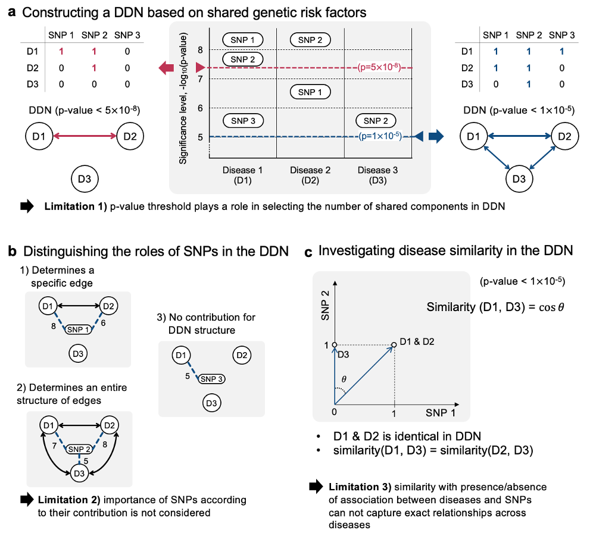
To address the discussed limitations of previous approaches to developing DDNs, we proposed a new method inspired by natural language processing to generate networks from PheWAS data
Taking inspiration from the NLP method “term frequency - inverse document frequency” (TF-IDF), we propose a new method we call “variant frequency - inverse phenotype frequency” (VF-IPF), which will weight the contributions of SNPs to disease associations. The outcome of this method presents itself as follows:
If a SNP is significant for only a few diseases, it is upweighted.
If a SNP is significant for many diseases, it is downweighted (similar to searching for the word “the” in a manuscript)
If a SNP is not significant for diseases, it is downweighted.
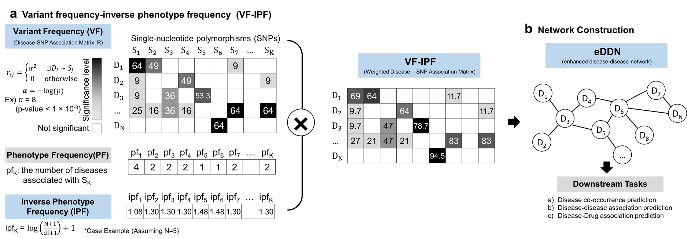
To test how the proposed method affects the way we represent cross-phenotype associations, we constructed an enhanced disease-disease network (eDDN) using UK biobank PheWAS summary statistics and tested the eDDN with three downstream tasks (see Figure 7), including:
co-occurrence disease prediction when index disease of interest is given,
novel disease connection prediction, and
therapeutic drug prediction based on disease similarity.
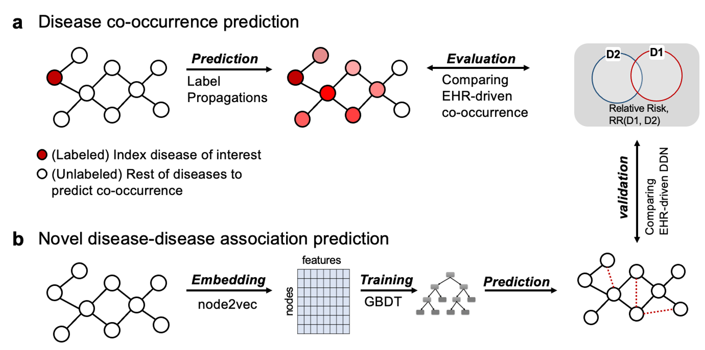
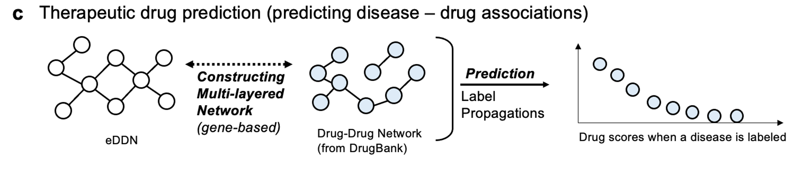
- Comparing our eDDN’s effectivness at predicting known disease comorbidities compared to other DDNs, we see that our eDDN has the highest AUC (i.e. it has the best performance).
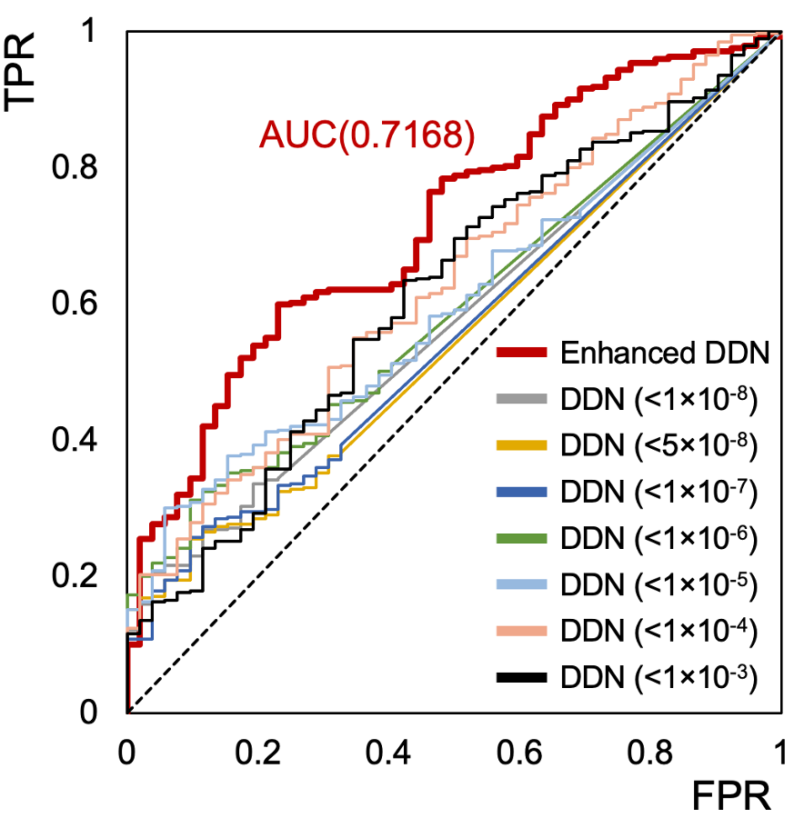
- Furthermore, we see the utility of the eDDN in evaluating potential options for drug repurposing in the treatment of rheumatoid arthritis.
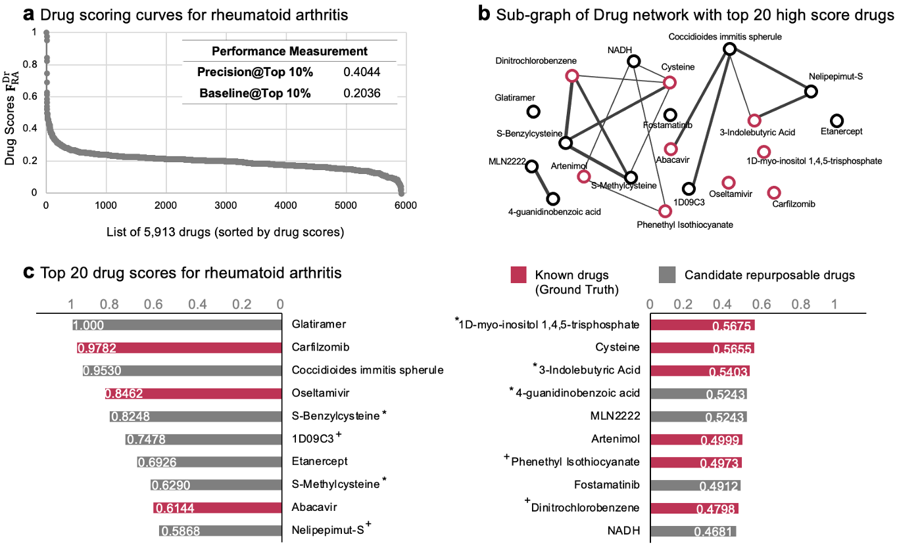
In summary, we find that our proposed eDDN more effectively captures genetic associations between diseases from PheWAS data compared to previous approaches.
This manuscript is currently under review for publication.
Today’s post was meant to give a sample of some of my work during my PhD. To read more about my currently published manuscripts, you can refer to my Google Scholar profile here.
In next week’s post, I will conclude this series on my PhD work with my personal takeaways from my program as well as tips for current, incoming, and aspiring PhD students, including selecting a program, selecting a thesis advisor, picking projects, and more! Until then~